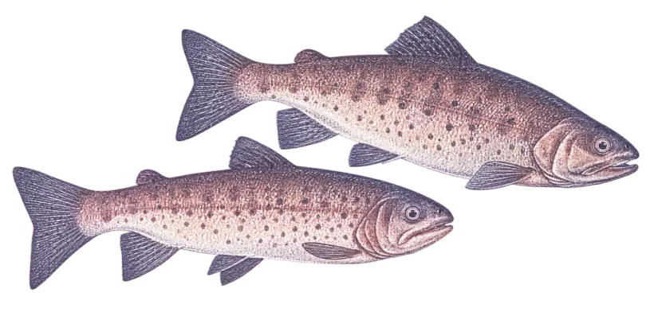
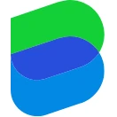
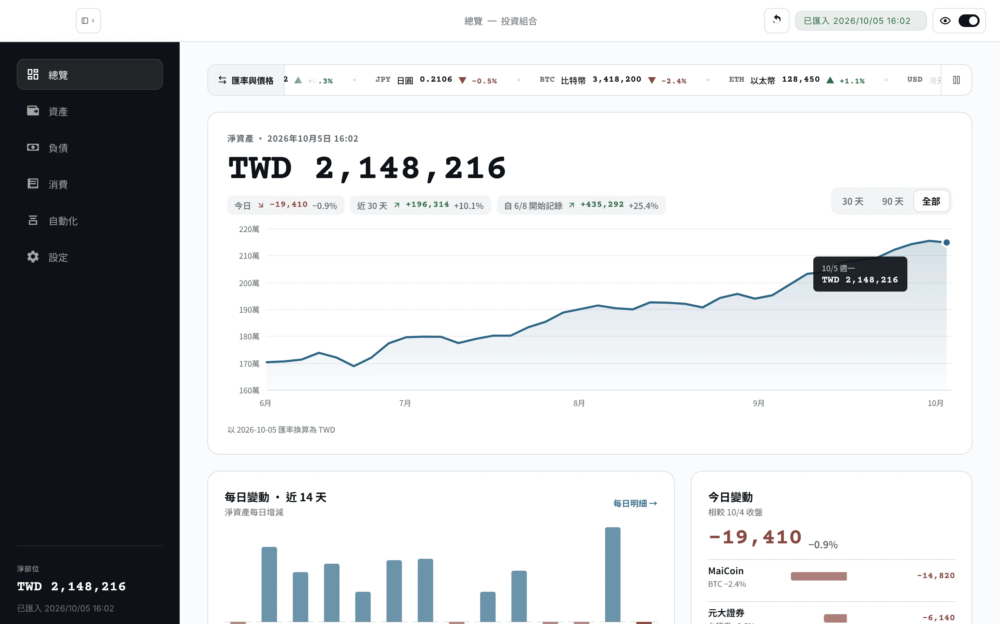
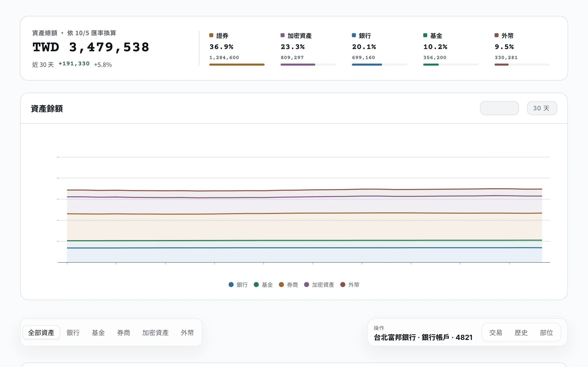
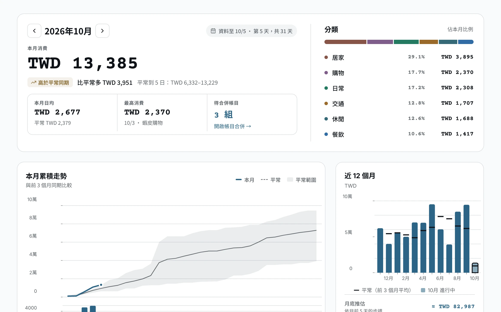
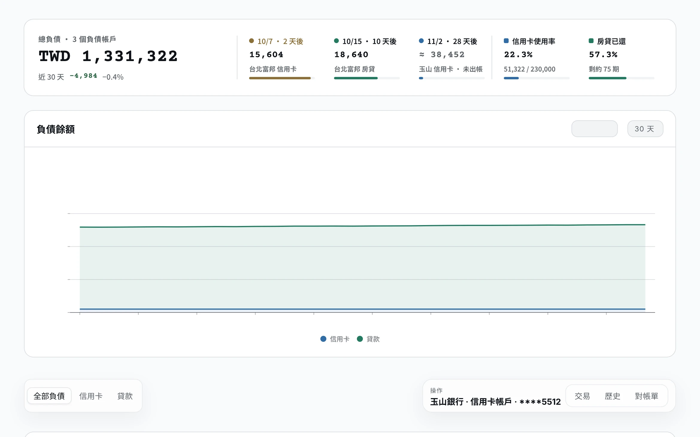

銀行、信用卡、投資帳戶，一鍵匯入。
每個數字都查得到出處。
OctopusBeak 從 11 家金融機構與電子發票收集帳務，在你的 Mac 上整理成一份能逐筆核對的財務全貌。
- 適用 Apple silicon｜測試版本
- 資料只留在你的 Mac
11 家金融機構加上電子發票，一次匯進同一份帳。
存款、信用卡、貸款、證券、基金、外幣，還有 MaiCoin 的虛擬資產，都放在同一個可以核對的地方。支援的來源會逐步增加。
Beta 已支援
- 台北富邦存款、信用卡、貸款
- 玉山銀行信用卡
- 元大銀行存款、外幣、貸款、信用卡、基金
- 元大證券證券投資
- 國泰世華台幣存款、外幣存款
- 華南銀行存款
- 中國信託存款
- 中華郵政存款
- 永豐銀行帳戶

LINE Bank帳戶- MaiCoin虛擬資產
- 其他資料來源電子發票
按一次，全部匯入。
來源設定好之後，按一下匯入，OctopusBeak 會從頭跑到完，把每個帳戶的資料收進財務全貌。
看見全貌，也點得回每一筆出處。
從總資產、總負債，到單一帳戶和每筆交易，每一層都標著來源。要核對時直接點回去，不用再翻檔案和試算表。

-

資產 依類別看每個帳戶的餘額與走勢 -

消費 帳目合併後，逐筆對回明細 -

負債 先看到期，再追到每一張卡
在你的 Mac 上整理，也只留在你的 Mac。
帳務資料和設定都存在本機，登入憑證以 macOS 安全儲存機制加密。
- 資料只留在你的 Mac
- 憑證由 macOS 加密保護
常見問題
匯入時需要我在旁邊操作嗎？
不需要。來源設定好之後，按一下匯入，OctopusBeak 會從頭跑到完，所有來源一次收齊。
OctopusBeak 的資料存在哪裡？
OctopusBeak 在你的 Mac 上執行。收集到的帳務資料、財務帳本和應用程式設定都存在本機，登入憑證以 macOS 的安全儲存機制加密。
我的 Mac 可以安裝 OctopusBeak Beta 嗎？
Beta 版支援搭載 Apple silicon（M 系列晶片）的 Mac。Intel Mac、Windows 與其他平台目前還不支援。
少花時間整理帳，多花時間看懂自己的錢。
下載 macOS Beta
適用 Apple silicon｜測試版本